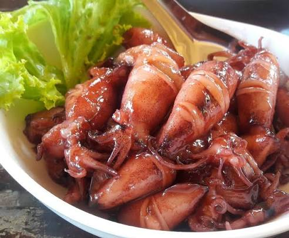
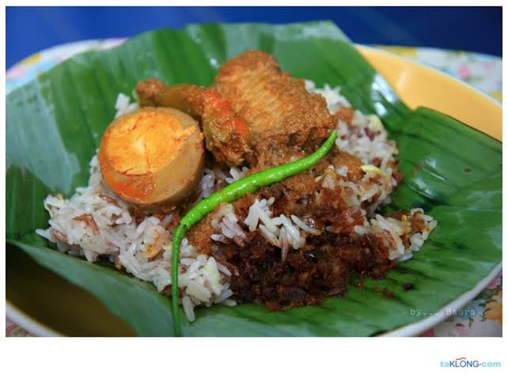
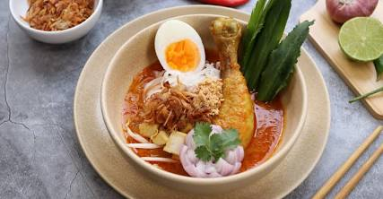

ปลาหมึกต้มหวาน
อาหารคาว
ท้องถิ่น
รสชาติเค็มหวานพอดีและน่ารับประทานมาก เหมาะกับคนที่ชอบอาหารทะเล
ดูร้านแนะนำลองชิมเมนูท้องถิ่นที่มีรสชาติแปลกใหม่และอร่อยมากในจังหวัดปัตตานี

รสชาติเค็มหวานพอดีและน่ารับประทานมาก เหมาะกับคนที่ชอบอาหารทะเล
ดูร้านแนะนำ
เป็นอาหารที่มีความโดดเด่นด้วยความหอมของเครื่องเทศและความนุ่มของเนื้อสัตว์
ดูร้านแนะนำเมนูที่มีกลิ่นหอมของเครื่องเทศและเนื้อไก่ชุ่มชื้น ทำให้กินแล้วติดใจ
ดูร้านแนะนำ
แกงกลมกล่อมรสเผ็ดนิด ๆ หอมเครื่องเทศมาก เหมาะกับการรับประทานตอนเย็น
ดูร้านแนะนำ